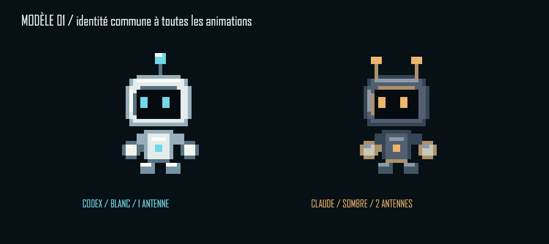
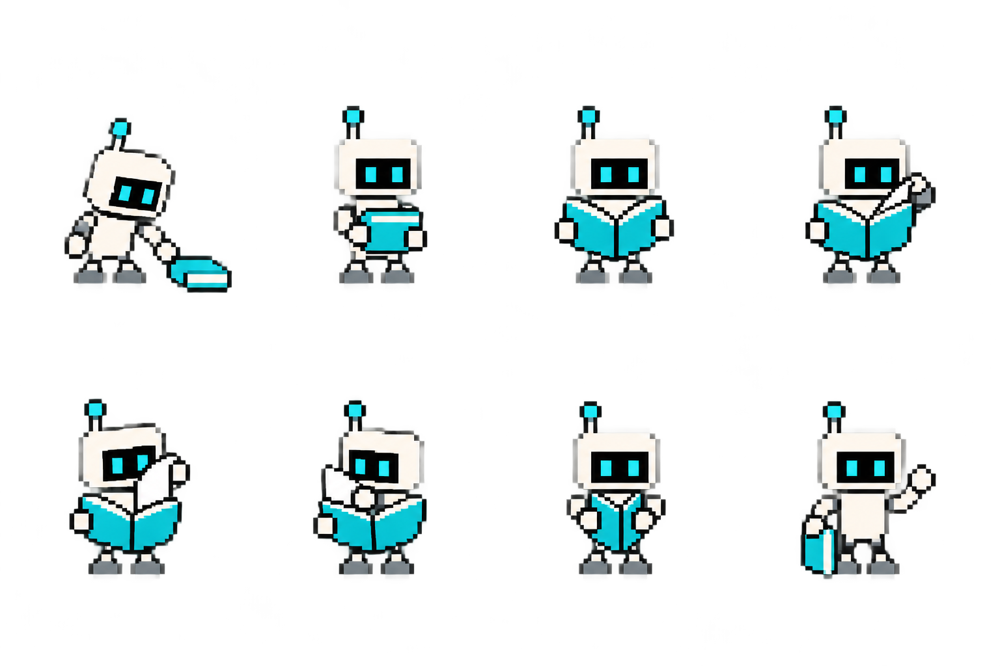

L’ATELIER DES MOUVEMENTS
Des gestes. Pas juste des poses.
22 séquences complètes. Observe l’action, mets-la en pause ou déplace le curseur pour voir chaque étape. Les deux familles partagent les mouvements, avec leurs propres antennes et couleurs.
Les deux modèles figés et la référence
Une même tête et un même corps pour toutes les actions : Codex blanc à une antenne, Claude sombre à deux antennes. Les poses sont calculées avec les mêmes articulations. Chaque action possède sa propre planche dans le dossier assets.

Référence de style retenue : le petit robot carré de la lecture.
